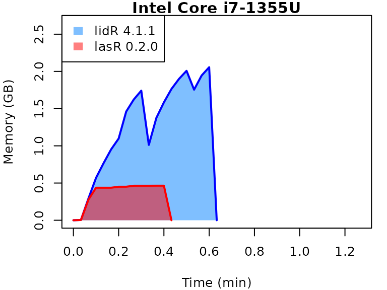
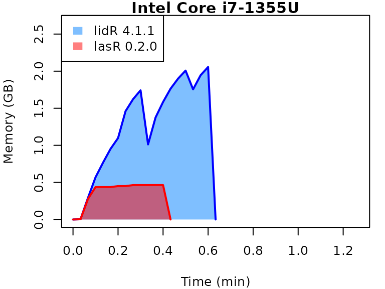
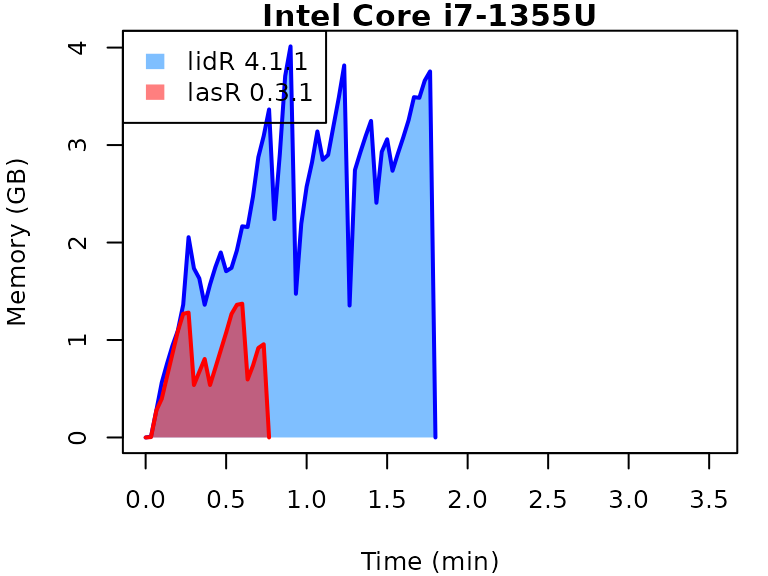
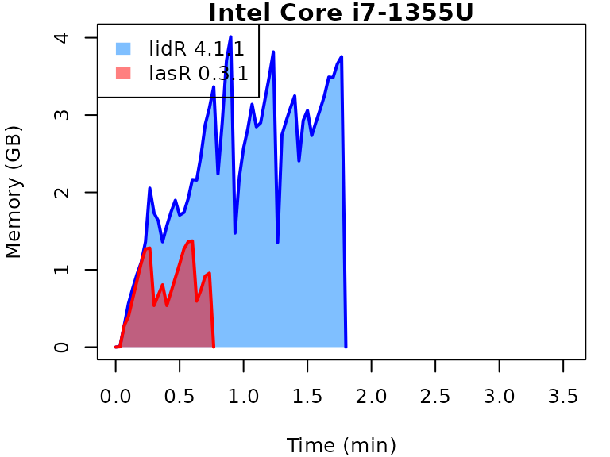

This vignette presents benchmarks for various tasks using
lidR and lasR. The x-axis represents the time
spent on the task, while the y-axis represents the memory used for the
task. The benchmarks are re-run for every version of lidR
and lasR.
-
Number of files: 4 (spatially indexed with
.laxfiles) - Number of points: 119 million (30 million per file)
- Coverage: 10.3 km² (2.5 km² per file)
- Density: 12 points/m²
- OS: Linux
-
CPU:
- Intel Core i7-5600U CPU (5th generation Intel Core)
- Intel Core i7-1355U (13th generation Intel Core)
- Date: update 2024-03-01
-
Version:
- lidR 4.1.1
- lasR 0.4.0
In the following the term1 corerefers to the processing of one LAS/LAZ file at a time sequentially. But some algorithm such as the local maximum filter are internally parallelized using half of the available cores. The term4 coresrefers to the fact that 4 files are processed simultaneously. InlidRthis is done using the packagefuture. InlasRthis is natively supported.
Canopy Height Model
Code
# lidR
future::plan(future::multicore(...))
chm = rasterize_canopy(ctg, 1, p2r())
# lasR
set_parallel_strategy(...)
pipeline = rasterize(1, "max")
exec(pipeline, on = ctg) 
Digital Terrain Model
Code
# lidR
future::plan(future::multicore(...))
dtm = rasterize_terrain(ctg, 1, tin())
# lasR
set_parallel_strategy(...)
tri = triangulate()
pipeline = reader_las(filter = keep_ground()) + tri + rasterize(1, tri)
exec(pipeline, on = ctg)Multiple raster
The gain in terms of computation time is much more significant when
running multiple stages in a single pipeline because files are read only
once in lasR but multiple times in lidR. Here,
all operations are executed in a single pass at the C++ level, resulting
in more efficient memory management.
Code
# lidR
future::plan(future::multicore(...))
custom_function = function(z,i) { list(avgz = mean(z), avgi = mean(i)) }
ctg = readLAScatalog(f)
chm = rasterize_canopy(ctg, 1, p2r())
met = pixel_metrics(ctg, ~custom_function(Z, Intensity), 20)
den = rasterize_density(ctg, 5)
# lasR
set_parallel_strategy(...)
custom_function = function(z,i) { list(avgz = mean(z), avgi = mean(i)) }
chm = rasterize(1, "max")
met = rasterize(20, custom_function(Z, Intensity))
den = rasterize(5, "count")
pipeline = chm + met + den
exec(pipeline, on = folder)Normalization
Code
# lidR
future::plan(future::multicore(...))
opt_output_files(ctg) <- paste0(tempdir(), "/*_norm")
norm = normalize_height(ctg, tin())
# lasR
set_parallel_strategy(...)
pipeline = reader(f) + normalize() + write_las()
processor(pipeline) 
Local maximum
Code
# lidR
future::plan(future::multicore(...))
tree = locate_trees(ctg, lmf(5))
# lasR
set_parallel_strategy(...)
pipeline = reader(f) + local_maximum(5)
processor(pipeline)Complex Pipeline
In this complex pipeline, the point cloud is normalized and written
to new files. A Digital Terrain Model (DTM) is produced, a Canopy Height
Model (CHM) is built, and individual trees are detected. These detected
trees are then used as seeds for a region-growing algorithm that
segments the trees. The lasR pipeline can handle hundreds
of laser tiles, while lidR may struggle to apply the same
pipeline, especially during tree segmentation.
Code
del = triangulate(filter = keep_ground())
norm = transform_with(del)
dtm = rasterize(1, del)
chm = rasterize(1, "max")
seed = local_maximum(3)
tree = region_growing(chm, seed)
write = write_las()
pipeline = read + del + norm + write + dtm + chm + seed + tree
ans = exec(pipeline, on = ctg, progress = TRUE)